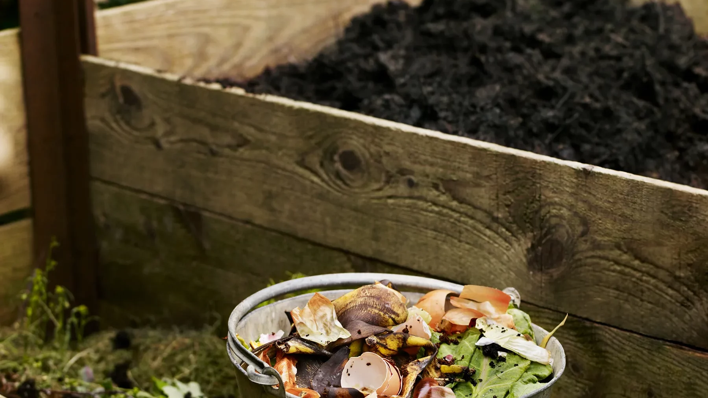
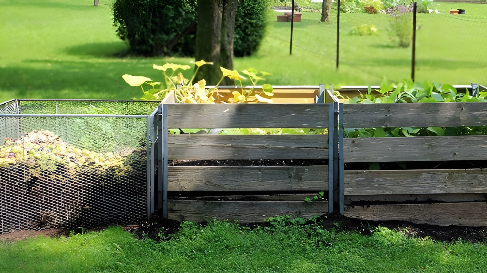

Tipuri de Compostare

Compostarea Colectivă
Compostarea colectivă este indicată în spațiile aferente clădirilor de locuit sau în vecinătate acestora. Se pot instala zone de compostare și în școli,grădinițe,gospodării cu grădini mici.
Află mai mult.

Compostarea Productivă
Pentru a composta cât mai eficient,se aplică sistemul care funcționează în mod ideal cu cel putin 3 recipiente pentru compostare
Află mai mult.